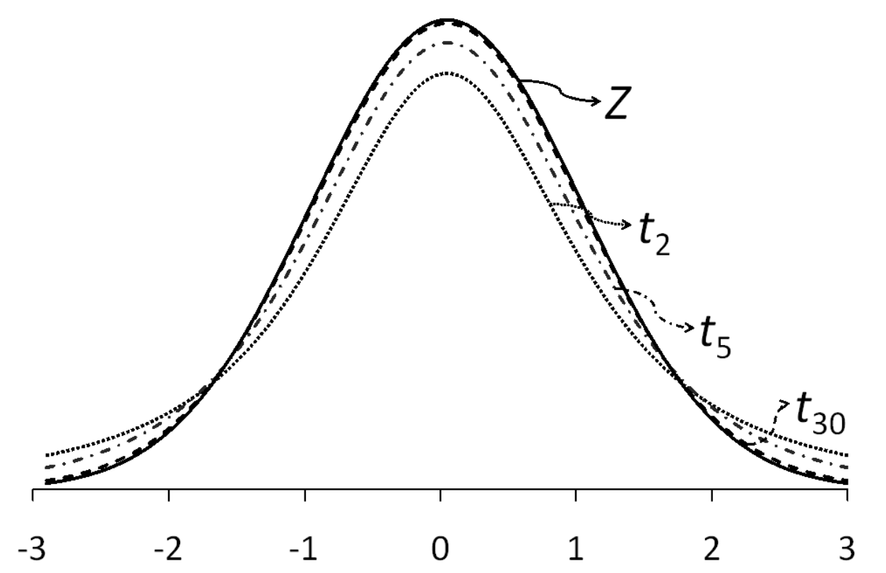
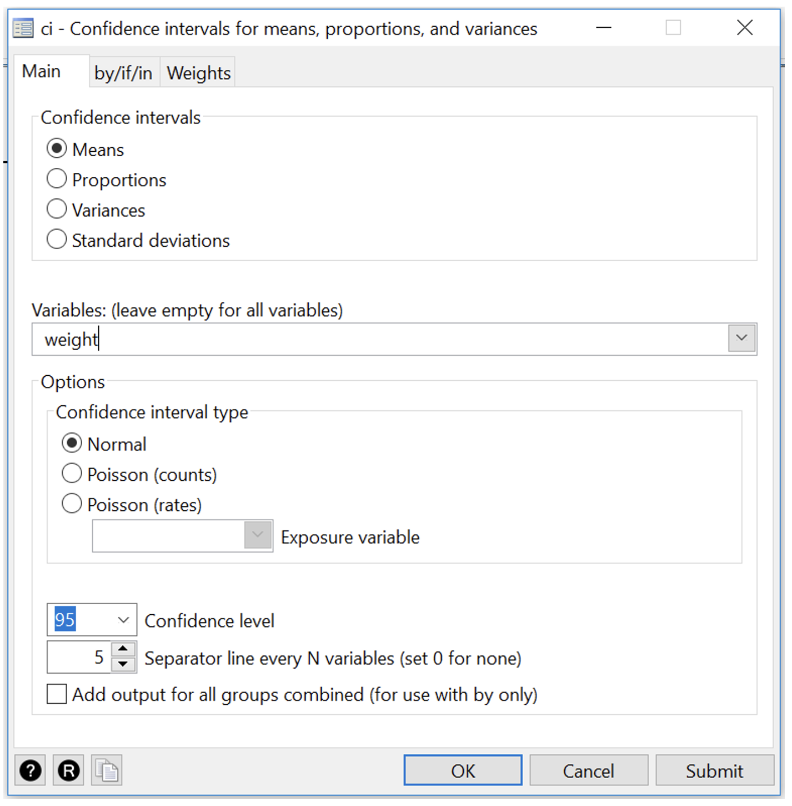
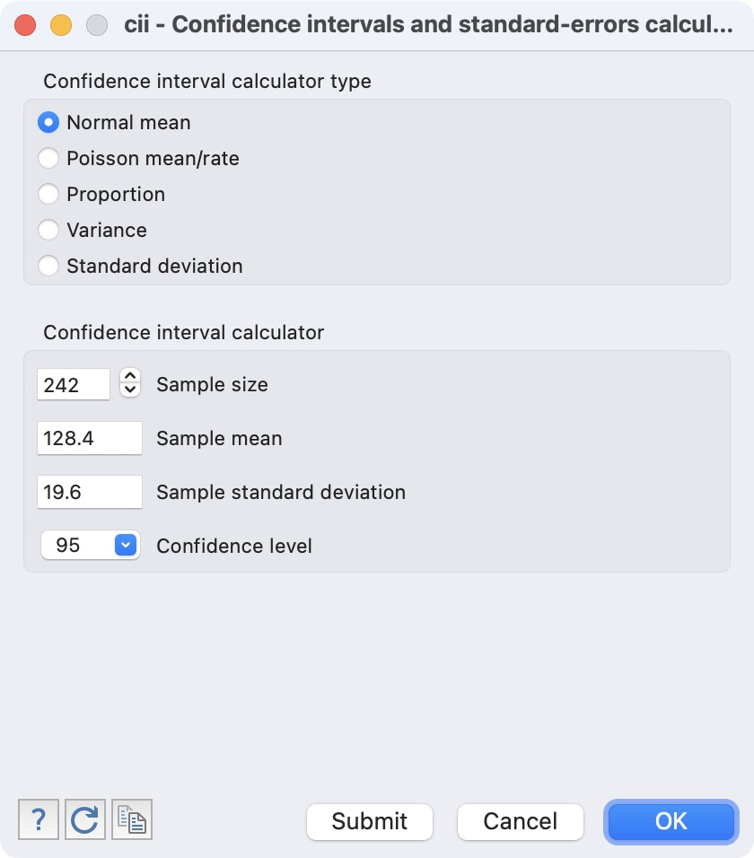

Learning objectives
By the end of this module you will be able to:
- Explain the purpose of sampling, different sampling methods and their implications for data analysis;
- Distinguish between standard deviation of a sample and standard error of a mean;
- Recognise the importance of the central limit theorem;
- Calculate the standard error of a mean;
- Calculate and interpret confidence intervals for a mean;
- Be familiar with the t-distribution and when to use it.
Readings
Kirkwood and Sterne (2001); Chapters 4 and 6. [UNSW Library Link]
Bland (2015); Sections 3.3 and 3.4, 8.1 to 8.3. [UNSW Library Link]
3.1 Introduction
To describe the characteristics of a population we can gather data about the entire population (as is undertaken in a national census) or we can gather data from a sample of the population. When undertaking a research study, taking a sample from a population is far more cost-effective and less time consuming than collecting information from the entire population. When a sample of a population is selected, summary statistics that describe the sample are used to make inferences about the total population from which the sample was drawn. These are referred to as inferential statistics.
However, for the inferences about the population to be valid, a random sample of the population must be obtained. The goal of using random sampling methods is to obtain a sample that is representative of the target population. In other words, apart from random error, the information derived from the sample is expected to be much the same as the information collected from a complete population census as long as the sample is large enough.
3.2 Sampling methods
Methods have been designed to select participants from a population such that each person in the target population has an equal probability of being chosen. Methods that use this approach are called random sampling methods. Examples include simple random sampling and stratified random sampling.
In simple random sampling, every person in the population from which the sample is drawn has the same random chance of being selected into the sample. To implement this method, every person in the population is allocated an ID number and then a random sample of the ID numbers is selected. Software packages can be used to generate a list of random numbers to select the random sample.
In stratified sampling, the population is divided into distinct non-overlapping subgroups (strata) according to an important characteristic (e.g. age or sex) and then a random sample is selected from each of the strata. This method is used to ensure that sufficient numbers of people are sampled from each stratum and therefore each subgroup of interest is adequately represented in the sample.
The purpose of using random sampling is to minimise selection bias to ensure that the sample enrolled in a study is representative of the population being studied. This is important because the summary statistics that are obtained can then be regarded as valid in that they can be applied (generalised) back to the population.
A non-representative sample might occur when random sampling is used, simply by chance. However, non-random sampling methods, such as using a study population that does not represent the whole population, will often result in a non-representative sample being selected so that the summary statistics from the sample cannot be generalised back to the population from which the participants were drawn. The effects of non-random error are much more serious than the effects of random error. Concepts such as non-random error (i.e. systematic bias), selection bias, validity and generalisability are discussed in more detail in PHCM9796: Foundations of Epidemiology.
3.3 Standard error and precision
Module 1 introduced the mean, variance and standard deviation as measures of central tendency and spread for continuous measurements from a sample or a population. As described in Module 1, we rarely have data on the entire population but we can infer information about the population (e.g. the mean weight of people in the population) based on a sample. However, a sample taken from a population is usually a small proportion of the total population. If the sample is very small, we would not expect our estimate of the population mean value to be precise. If the sample is very large, we would expect a more precise estimate of the population mean, i.e. the estimated mean value would be much closer to the true mean value in the population.
3.3.1 The standard error of the mean
A point estimate is a single best guess of the true value in the population. Instead of trying to guess the true value, it may be preferable to give a range of values in which we think the true value lies. For example, suppose we want to estimate the average weight of a population, and found a sample mean of 65 kg. Rather than saying we believe the true mean to be 65 kg, we could say we believe it is somewhere between, say, 58 kg and 72 kg.
Often in papers, one will see something like “the mean is 70.24 \(\pm\) 1.78 kg”. The value 1.78 is the standard error of the mean (sometimes shortened to S.E.M. or S.E.). The standard error of the mean measures the extent to which we expect the means from different samples to vary because of chance error in the sampling process. The standard error is a measure of precision of the point estimate. This statistic is directly proportional to the standard deviation of the variable, and inversely proportional to the size of the sample. The standard error of the mean for a continuously distributed measurement for which the SD is an accurate measure of spread is computed as follows:
\[ \text{SE}(\bar{x}) = \frac{\text{SD}}{\sqrt{n}} \] For our sample of weight data from 30 patients in Module 1:
\[ \text{SE}(\bar{x}) = \frac{\text{5.04}}{\sqrt{30}} = 0.92 \] Because the calculation uses the sample size (n) (i.e. the number of study participants) in the denominator, the SE will become smaller when the sample size becomes larger. A smaller SE indicates that the estimated mean value is more precise.
The standard error is an important statistic that is related to sampling variation. When a random sample of a population is selected, it is likely to differ in some characteristic compared with another random sample selected from the same population. Also, when a sample of a population is taken, the true population mean is an unknown value.
Just as the standard deviation measures the spread of the data around the population mean, the standard error of the mean measures the spread of the sample means. Note that we do not have different samples, only one. It is a theoretical concept which enables us to conduct various other statistical analyses.
3.4 Central limit theorem
Even though we now have an estimate of the mean and its standard error, we might like to know what the mean from a different random sample of the same size might be. To do this, we need to know how sample means are distributed. In determining the form of the probability distribution of the sample mean (\(\bar{x}\)), we consider two cases:
3.4.1 When the population distribution is unknown:
The central limit theorem for this situation states:
In selecting random samples of size \(n\) from a population with mean \(\mu\) and standard deviation \(\sigma\), the sampling distribution of the sample mean \(\bar{x}\) approaches a normal distribution with mean \(\mu\) and standard deviation \(\tfrac{\sigma}{\sqrt{n}}\) as the sample size becomes large.
The sample size n = 30 and above is a rule of thumb for the central limit theorem to be used. However, larger sample sizes may be needed if the distribution is highly skewed.
3.4.2 When the population is assumed to be normal:
In this case the sampling distribution of \(\bar{x}\) is normal for any sample size.
3.5 95% confidence interval of the mean
In Module 2, we showed that the characteristics of a Standard Normal Distribution are that 95% of the data lie within 1.96 standard deviations from the mean (Figure 2.2). Because the central limit theorem states that the sampling distribution of the mean is approximately Normal in large enough samples, we expect that 95% of the mean values would fall within 1.96 × SE units above and below the measured mean population value.
For example, if we repeated the study on weight 100 times using 100 different random samples from the population and calculated the mean weight for each of the 100 samples, approximately 95% of the values for the mean weight calculated for each of the 100 samples would fall within 1.96 × SE of the population mean weight.
This interpretation of the SE is translated into the concept of precision as a 95% confidence interval (CI). A 95% CI is a range of values within which we have 95% confidence that the true population mean lies. If an experiment was conducted a very large number of times, and a 95%CI was calculated for each experiment, 95% of the confidence intervals would contain the true population mean.
The calculation of the 95% CI for a mean is as follows:
\[ \bar{x} \pm 1.96 \times \text{SE}( \bar{x} ) \] This is the generic formula for calculating 95% CI for any summary statistic. In general, the mean value can be replaced by the point estimate of a rate or a proportion and the same formula applies for computing 95% CIs, i.e.
\[ 95\% \text{ CI} = \text{point estimate} \pm 1.96 \times \text{SE}(\text{point estimate)} \]
The main difference in the methods used to calculate the 95% CI for different point estimates is the way the SE is calculated. The methods for calculating 95% CI around proportions and other ratio measures will be discussed in Module 6.
The use of 1.96 as a general critical value to compute the 95% CI is determined by sampling theory. For the confidence interval of the mean, the critical value (1.96) is based on normal distribution (true when the population SD is known). However, in practice, Stata and other statistical packages will provide slightly different confidence intervals because they use a critical value obtained from the t-distribution. The t-distribution approaches a normal distribution when the sample size approaches infinity, and is close to a normal distribution when the sample size is ≥30.The critical values obtained from the t-distribution are always larger than the corresponding critical value from the normal distribution. The difference gets smaller as the sample size becomes larger. For example, when the sample size n=10, the critical value from the t-distribution is 2.26 (rather than 1.96); when n= 30, the value is 2.05; when n=100, the value is 1.98; and when n=1000, the critical value is 1.96.
The critical value multiplied by SE (for normal distribution, 1.96 × SE) is called the maximum likely error for 95% confidence.
3.5.1 Worked Example 3.1: 95% CI of a mean
For our sample of weights data with standard error of 0.92:
\[ \begin{aligned} \ 95\% \text{ CI}(\bar{x}) &= \bar{x} \pm 1.96 \times \text{SE}(\bar{x}) \\ &= 70.0 \pm 1.96 \times 0.92 \\ &= 68.2 \text{ to } 71.8 \text{kg} \end{aligned} \] We interpret this confidence interval as: we are 95% confident that the true mean of the population from which our sample was drawn lies between 68.2 kg and 71.8 kg.
This calculation takes into account both the sample mean of 70.0 kg and the sampling error that has arisen by chance due to the sample size of 30 people.
For a 95% CI to be reported around a mean value, the data values need to be approximately normally distributed, as discussed in Module 2.
3.5.2 The t-distribution and when should I use it?
The population standard deviation (\(\sigma\)) is required for calculation of the standard error. Usually, \(\sigma\) is not known and the sample standard deviation (\(s\)) is used to estimate it. It is known, however, that the sample standard deviation of a normally distributed variable underestimates the true value of \(\sigma\), particularly when the sample size is small.
Someone by the pseudonym of Student came up with the Student’s t distribution with (\(n-1\)) degrees of freedom to account for this underestimation. It looks very much like the standardised normal distribution, only that it has fatter tails (Figure 3.1). As the degrees of freedom increase (i.e. as \(n\) increases), the t-distribution gradually approaches the standard normal distribution. With a sufficiently large sample size, the Student’s t-distribution closely approximates the standardised normal distribution.
If a variable \(X\) is normally distributed and the population standard deviation \(\sigma\) is known, using the normal distribution is appropriate. However, if \(\sigma\) is not known then one should use the student t-distribution with (\(n – 1\)) degrees of freedom.
3.5.3 Worked Example 3.2
The publication of a study using a sample of 242 participants reported a sample mean systolic blood pressure of 128.4 mmHg and a sample standard deviation of 19.56 mmhg. Find the 95% confidence interval for the mean systolic blood pressure.
In Stata we use the cii means command to compute the 95% confidence interval given the sample mean, sample standard deviation and the sample size (i.e. without using individual data from a dataset) (Section 3.7):
. cii means 242 128.4 19.56
Variable | Obs Mean Std. Err. [95% Conf. Interval]
-------------+---------------------------------------------------------------
| 242 128.4 1.257364 125.9232 130.8768In R we use the ci_mean function provided in Section 3.9:
ci_mean(n=242, mean=128.4, sd=19.56, width=0.95)[1] "95% CI: 125.923 to 130.877"Both commands use the t-distribution, and the output can be interpreted as: we are 95% confident that the true mean systolic blood pressure of the population from which the sample was drawn lies between 125.9 kg and 130.9 mmHg.
Stata notes
3.6 Calculating a 95% confidence interval of a mean: Individual data
To demonstrate the computation of the 95% confidence interval of a mean we have used data from mod02_weight_30.dta. To calculate the 95% confidence interval, go to Statistics > Summaries, tables, and tests > Summary and descriptive statistics > Confidence intervals. In the ci dialog box, select weight as the Variable.

Click OK or Submit to obtain Output 3.1.
[Command: ci means weight]
3.7 Calculating a 95% confidence interval of a mean: Summarised data
For Worked Example 3.2 where we are given the sample mean, sample standard deviation and sample size, we use the cii means command. To calculate the 95% CI, go to Statistics > Summaries, tables, and tests > Summary and descriptive statistics > Normal mean CI calculator. In the cii dialog box, check that the Normal mean button is selected, and enter 242 as the Sample size, 128.4 as the Sample mean, 19.56 as the Sample standard deviation and check that 95 in entered as the Confidence level.

Click OK or Submit to obtain the following output:
Stata Output 3.2: 95%CI for a given sample mean, sample standard deviation and sample size
. cii means 242 128.4 19.56
Variable | Obs Mean Std. Err. [95% Conf. Interval]
-------------+---------------------------------------------------------------
| 242 128.4 1.257364 125.9232 130.8768R notes
3.8 Calculating a 95% confidence interval of a mean: individual data
To demonstrate the computation of the 95% confidence interval of a mean we have used data from mod02_weight_30.rds which contains the weights of 30 students:
students <- readRDS("data/examples/mod02_weight_30.rds")We can examine the data set using the summary command:
summary(students) weight gender
Min. :60.00 Male :16
1st Qu.:67.50 Female:14
Median :70.00
Mean :70.00
3rd Qu.:74.38
Max. :80.00 The mean and its 95% confidence interval can be obtained many ways in R. We will use the t.test() function installed in R to calculate the confidence interval:
t.test(students$weight)
One Sample t-test
data: students$weight
t = 76.029, df = 29, p-value < 2.2e-16
alternative hypothesis: true mean is not equal to 0
95 percent confidence interval:
68.11694 71.88306
sample estimates:
mean of x
70 The output of the t.test() function gives us the sample mean (70.0 kg) as well as the 95% confidence interval around the mean: 68.1 to 71.9 kg.
Note: the descriptives() function within the jmv package also calculates a 95% confidence interval around the mean. It is recommended not to use this function as it currently (as of June 2022) uses a z value to calculate the confidence interval, rather than a t value.
3.9 Calculating a 95% confidence interval of a mean: summarised data
For Worked Example 3.2 where we are given the sample mean, sample standard deviation and sample size. R does not have a built-in function to calculate a confidence interval from summarised data, but we can write our own.
Note: writing your own functions is beyond the scope of this course. You should copy and paste the code provided to do this.
### Copy this section
ci_mean <- function(n, mean, sd, width=0.95, digits=3){
lcl <- mean - qt(p=(1 - (1-width)/2), df=n-1) * sd/sqrt(n)
ucl <- mean + qt(p=(1 - (1-width)/2), df=n-1) * sd/sqrt(n)
print(paste0(width*100, "%", " CI: ", format(round(lcl, digits=digits), nsmall = digits),
" to ", format(round(ucl, digits=digits), nsmall = digits) ))
}
### End of copy
ci_mean(n=242, mean=128.4, sd=19.56, width=0.95)[1] "95% CI: 125.923 to 130.877"ci_mean(n=242, mean=128.4, sd=19.56, width=0.99)[1] "99% CI: 125.135 to 131.665"Activities
Activity 3.1
An investigator wishes to study people living with agoraphobia (fear of open spaces). The investigator places an advertisement in a newspaper asking for volunteer participants. A total of 100 replies are received of which the investigator randomly selects 30. However, only 15 volunteers turn up for their interview.
- Which of the following statements is true?
- The final 15 participants are likely to be a representative sample of the population available to the investigator
- The final 15 participants are likely to be a representative sample of the population of people with agoraphobia
- The randomly selected 30 participants are likely to be a representative sample of people with agoraphobia who replied to the newspaper advertisement
- None of the above
- The basic problem confronted by the investigator is that:
- The accessible population might be different from the target population
- The sample has been chosen using an unethical method
- The sample size was too small
- It is difficult to obtain a sample of people with agoraphobia in a scientific way
Activity 3.2
A dental epidemiologist wishes to estimate the mean weekly consumption of sweets among children of a given age in her area. After devising a method which enables her to determine the weekly consumption of sweets by a child, she conducted a pilot survey and found that the standard deviation of sweet consumption by the children per week is 85 gm (assuming this is the population standard deviation, \(\sigma\)). She considers taking a random sample for the main survey of:
- 25 children, or
- 100 children, or
- 625 children or
- 3,000 children.
- Estimate the standard error and maximum likely (95% confidence) error of the sample mean for each of these four sample sizes.
- What happens to the standard error as the sample size increases? What can you say about the precision of the sample mean as the sample size increases?
Activity 3.3
The dataset for this activity is the same as the one used in Activity 1.4 in Module 1. The file is Activity1.4.dta or Activity1.4.rds on Moodle.
- Plot a histogram of diastolic BP and describe the distribution.
- Use Stata or R to obtain an estimate of the mean, standard error of the mean and the 95% confidence interval for the mean diastolic blood pressure.
- Interpret the 95% confidence interval for the mean diastolic blood pressure.
Activity 3.4
Suppose that a random sample of 81 newborn babies delivered in a hospital located in a poor neighbourhood during the last year had a mean birth weight of 2.7 kg and a standard deviation of 0.9 kg. Calculate the 95% confidence interval for the unknown population mean. Interpret the 95% confidence interval.